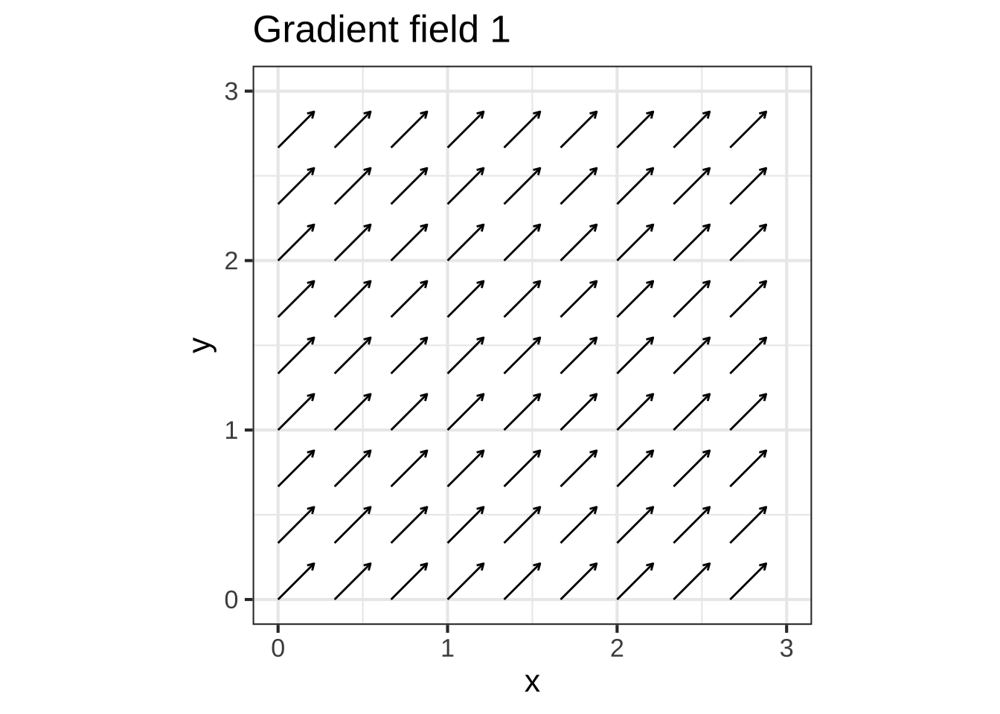
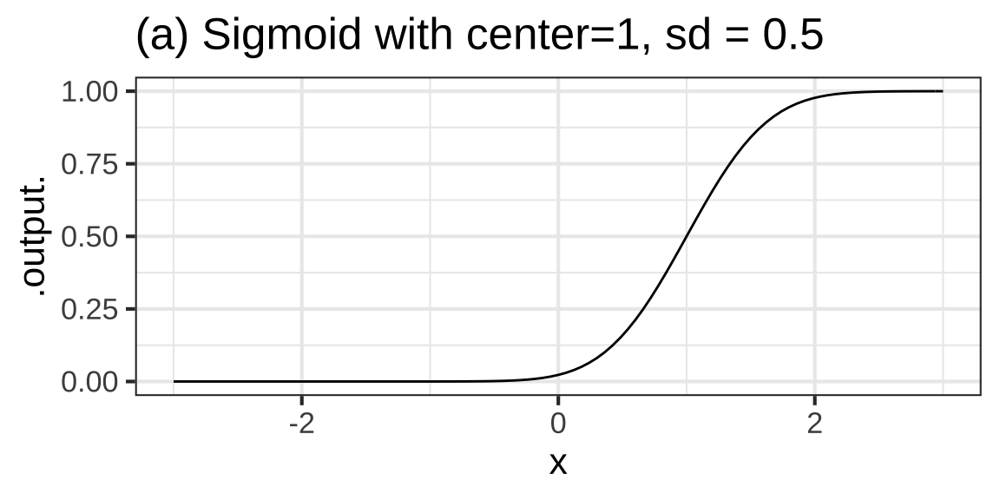
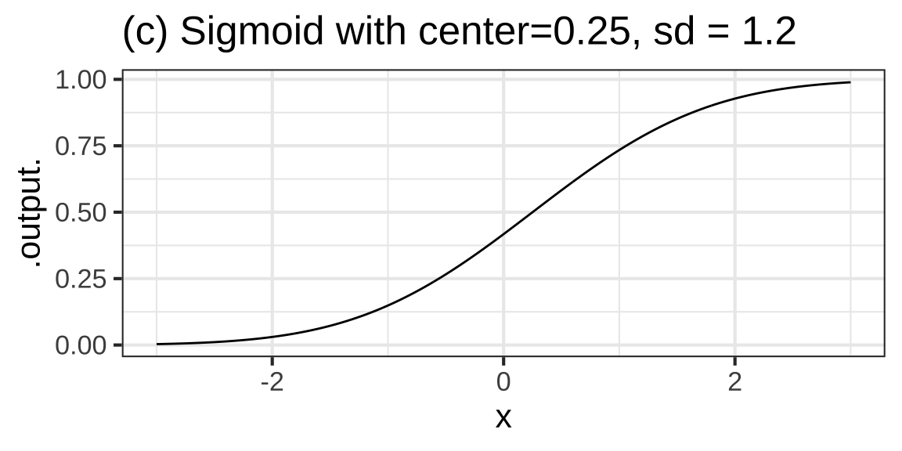
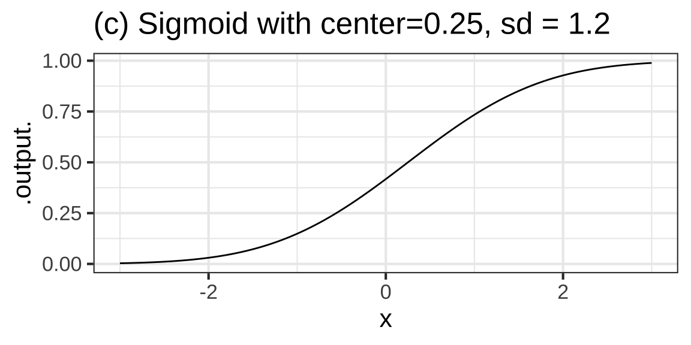

7 Parameters for functions
The pattern-book functions provide the modeler with a collection of shapes. They are not yet fully suited to represent real-world phenomena. To illustrate, consider Figure 7.1 which shows the number of officially confirmed cases in March 2020.  800
800
The outbreak was widely described as “exponential,” so alongside the data Figure 7.1 shows the function \(e^x\).

Figure 7.1: Cumulative confirmed COVID-19 cases during the month of March, 2020. The red curve is \(e^x\)
There’s an obvious mismatch between the data and the function \(e^x\). Does this mean the COVID pattern is not exponential?
A hint comes from the formula \(e^x\). What is \(x\)? Plotted as it is in the graph, \(x\) is the calender day in March. But why shouldn’t \(x\) be the given in hours or minutes or weeks?
If we want the input to \(\exp()\) to be in hours, we can multiply \(x\) by 24. If the input is to be in weeks, the multiplier should be \(\frac{1}{7} = 0.1429\). In both cases, the function will be \(e^{kx}\), where \(k\) would be 24 for hours or 0.1429 for weeks. Exploring a bit, we found that \(0.3 \leq k < 0.5\) will produce functions graphs that match the data much better than pattern-book \(e^x\). 810

Figure 7.2: COVID-19 data compared to the exponential functions \(e^{kt}\). A variety of possible numerical values for \(k\) is shown.
The multiplier \(k\) in \(e^{kx}\) is called a parameter of the function: a number that we can use to set the scale of the input. To use the exponential function to model COVID, we’ve had to stretch out the red curve in Figure 7.2 by tailoring pattern-book \(x\) as \(k x\). Perhaps it’s a matter of personal choice which size of \(k\) will be best suited to model the data.
My personal choice is \(k=0.30\). My reasoning? The orange curve parallels the COVID data. The flaw with \(k=0.30\) is that the curve lags several the data by several days. But we can fix this by pulling the \(k=0.30\) curve to the left. Mathematically this can be accomplished by subtracting a few days from \(x\) before multiplying by \(k\), that is, using the function \[f(x) \equiv e^{k(x-s)}\] where \(s\) stands for the shift.
Figure 7.3 shows the orange curve after pulling it 10 days to the left. It’s now a pretty good match to the data.

Figure 7.3: COVID-19 data compared to the exponential functions \(e^{k(t-s)}\).
Note that once we’ve aligned the orange curve horizontally, it seems to curve too much. The green curve does much better. It has a much gentler curve, \(k=0.19\) and is pulled about a little more than a month to the left. 820
By parameterizing the exponential function as \(e^{k(x-s)}\) and finding suitable values for \(k\) and \(s\), we get a good match to the March data. But models can sometimes tell us more. For the green curve in Figure 7.3 the value of \(s\) is -32 days. 32 days before March 1 is in late January. And even though we didn’t have any January or February data to base the green curve on, late January 2020 is regarded as the very beginning of the outbreak.
7.1 Parallel scales
The graphical format we have been using to display functions of one variable places the input on the horizontal axis and the output on the vertical axis. This is not the only way to draw a function. Consider these everyday objects: a thermometer and a ruler.


Each object presents a read-out of what’s being measured—temperature or length—on two different scales. At the same time, the objects provide a way to convert one scale to another.
A function gives the output for any given input. We represent the input value as a position on a number line—which we call an “axis”—and the output as a position on another output line, almost always drawn perpendicular to one another. But the two number lines can just as well be parallel to one another. To evaluate the function, find the input value on the input scale and read off the corresponding output. The inverse function can be evaluated just as easily: switch the roles of the input and output scales. 830
Taking the traditional unit scale as the input and the metric scale as the output, the two functions implemented on the objects are: \[\underbrace{C(F) = \frac{5}{9}(F-32)}_\mbox{Fahrenheit to Celcius}\ \ \ \text{and}\ \ \ \ \underbrace{\text{cm(inches)} = 2.54 \times (\text{inches}-0}_\mbox{inches to cm})\] These are very simple, straight-line functions, but they play an important role in modeling.
Each conversion function can be written in the form \(\line(x) \equiv m (x - x_0)\). Of course, if you multiply the \(m\) through both terms in parentheses, you get \(\line(x) = m x - m x_0\) which can be written even more simply as \(mx + b\) by setting \(b\equiv m x_0\). So the conversion function is simply the straight-line function.
\(m\) and \(x_0\) are the parameters of the straight-line function. In terms of the graph of a straight-line function, they are the slope and x-intercept respectively.
Often, functions can be parameterized in other ways. For instance, you likely learned the parameterization \(m x + b\), in which \(m\) is (still) the slope of the graph but \(b\) is now the y-intercept.
We can call \(m(x - x_0)\) the “x-intercept parameterization” and \(m x + b\) the "y-intercept parameterization. They are equivalent and equally good ways of parameterizing the straight line. There are still other ways of parameterizing, each style reflecting its own format for specifying the two points that make up a line.
7.2 Scaling the input
To turn a pattern-book function into a basic modeling function all we do is use \(\line()\) to convert the input before applying the pattern-book function. 840
To illustrate the link between basic modeling functions and their pattern-book progenitors, Figure 7.4 shows the model we fit to the COVID-19 data:

Figure 7.4: A graph of the pattern-book exponential with an additional scale displayed (red) to match it to the COVID-19 data
The function being drawn is simply \(e^x\): a function from the pattern book. The black horizontal scale shows \(x\). To match the function to the data, that is, to show the basic modeling function, we simply add a new scale that translates \(x\) to “day in March.” That’s the red scale. So, on March 22, there were about 25,000 COVID cases to date.
The pattern-book function does not give a good model of the COVID case numbers. But if we scale the input before applying the pattern-book function, we are effectively laying a new axis, stretched and shifted from the original, that let’s us read off the number of cases.
Input scaling empowers the pattern-book functions to model a huge variety of phenomena. There’s just one exponential function and it always looks exactly the same. But there is a huge variety of ways to scale the input. With input scaling, the pattern-book function puts on clothes and becomes one of our basic modeling functions.
\[\underbrace{e^x}_\mbox{pattern-book function}\ \ \ \underbrace{e^{k(x-x_0)}}_\mbox{basic modeling function}\]
The straight-line function \(\line()\) is being written here as \(k(x-x_0)\) rather than \(m(x-x_0)\). It’s traditional to to write some of the basic modeling functions
You may have noticed that the above uses \(k\) instead of \(m\) as the multiplier in the straight-line function in the exponent. Of course, you can use whatever name you wish for a parameter. The idiom of mathematical notation has several conventions. Knowing these will help you read mathematics more fluently. 850
The table shows a few of them. Often, there are multiple parameterizations.
| Function | Written form | Parameter 1 | Parameter 2 |
|---|---|---|---|
| Exponential | \(e^{kt}\) | \(k\) “exponential constant”8 | Not used |
| Exponential | \(e^{t/\tau}\) | \(\tau\) “time constant”9 | Not used |
| Exponential | \(2^{t/\tau_2}\) | \(\tau_2\) “doubling time”10 | Not used |
| Power-law | \([x - x_0]^p\) | \(x_0\) “center” | Not used |
| Sinusoid | \(\sin\left(\frac{2 \pi}{P} (t-t_0)\right)\) | \(P\) “period” | \(t_0\) “time shift” |
| Sinusoid | \(\sin(\omega t + \phi)\) | \(\omega\) “angular frequency” | \(\phi\) “phase shift” |
| Sinusoid | \(\sin(2 \pi \omega t + \phi)\) | \(\omega\) “frequency” | \(\phi\) “phase shift” |
| Hump | dnorm(x, mn, sd) | mn “mean” | sd “standard deviation” |
| Sigmoid | pnorm(x, mn, sd) | mn “mean” | sd “standard deviation” |
| Straight-line | \(mx + b\) | \(m\) “slope” | \(b\) “y-intercept” |
| Straight-line | \(m (x-x_0)\) | \(m\) “slope” | \(x_0\) “center” |
7.3 Scale the output
Just as the natural input usually needs to be scaled before it reaches the pattern-book function, so the output from the pattern-book function may need to be scaled before it presents a result suited for interpreting in the real world.

Figure 7.5: Natural quantities must be scaled to pure numbers before being suited to the pattern-book functions. The output is a pure number which is scaled to the natural quantity of interest.
The overall result of input and output scaling is a smartly dressed modeling function ready to engage the real world. 860
| Name | Naked form | Dressed for action |
|---|---|---|
| exponential | \(e^x\) | \(A e^{kx} + C\) |
| sinusoid | \(\sin(x)\) | \(A \sin(\frac{2 \pi}{P} x) + C\) |
| proportional | \(x\) | \(a x + b\) |
The parameter \(C\) is often called the baseline or the offset. Statisticians call it the “intercept,” because it plays the same role as \(b\) in the straight-line function.
When working with sinusoids, parameter \(A\) is called the amplitude.
Of course, you’re already familiar with \(a\) and \(b\): the slope and intercept of a straight line.

Figure 7.6: Baseline (blue), amplitude (red), and period (green) for the sinusoid.

Figure 7.7: The baseline for the exponential is the horizontal asymptote. There is no vertical asymptote.
Exercise 7.11: MWLCS
Recall that each basic modeling functions are constructed from the corresponding pattern-book functions by scaling the input.
\[\text{pattern-book function}\ \ \underset{x\rightarrow a(x-x_0)}{\overset{\text{input scaling}}{\Large\Longrightarrow}} \ \ \text{basic modeling function}\]
Recognizing the axis crossings (y is blue, x is red) and asymptotes (orange) for the pattern-book functions can help you figure out the parameters \(a\) and \(x_0\) in the input scaling \(a(x-x_0)\) for the basic modeling functions. Here’s a reference:



Each of the following plots shows a basic modeling function whose input scaling has the form \(x - x_0\). Your job is to figure out from the graph what is the numerical value of \(x_0\). (Hint: For simplicity, \(x_0\) in the questions will always be an integer.)

Question A In plot (A), what is \(x_0\)?
-2 ︎✘ -1 ︎✘ 0 ︎✘ 1 ︎✘ 2 ✔︎ Right. Look for the input that generates the peak output value.

Question B In plot (B), what is \(x_0\)?
-2 ︎✘ -1 ✔︎ Good. Look for an input that generates a positive going zero crossing. 0 ︎✘ 1 ︎✘ 2 ︎✘
## Warning in log(x - 1): NaNs produced## Warning: Removed 214 row(s) containing missing values (geom_path).
Question C In plot (C), what is \(x_0\)?
-2 ︎✘ -1 ✔︎ Right. The location of the vertical asymtote is the clue. 0 ︎✘ 1 ︎✘ 2 ︎✘

Question D In plot (D), what is \(x_0\)?
-2 ︎✘ -1 ︎✘ 0 ︎✘ 1 ✔︎ The input where the output is half way between the two horizontal asymptotes 2 ︎✘

Question E In plot (E), what is \(x_0\)?
-2 ✔︎ Right. The location of the vertical asymtote is the clue. -1 ︎✘ 0 ︎✘ 1 ︎✘ 2 ︎✘
Exercise XX.XX: VcUetN
DRAFT
Similar to MWLCS but with input scaling of the form \(ax\).Exercise XX.XX: kUmsBG
DRAFT
Similar to MWLCS and VcUetN but with input scaling of the form \(a(x-x_0)\). Keep it simple.Exercise 7.17: uKCIE
Each of the graphs shows two horizontal scales and one of the basic modeling functions. Which horizontal scale (black or red) corresponds to the pattern-book function?
 Question A For graph (A), which scale corresponds to the pattern-book function?
Question A For graph (A), which scale corresponds to the pattern-book function?
black ✔︎ orange3 ︎✘ neither ︎✘ both ︎✘ It can’t be both. There’s only one pattern-book function. When you scale the input, it becomes a “basic modeling function.”

Question B For graph (B), which scale corresponds to the pattern-book function?
black ︎✘ red ✔︎ Right. The pattern-book function has an output of 1/2 when the output is zero. That’s what the red scale shows. neither ︎✘ both ︎✘ It can’t be both. There’s only one pattern-book function. When you scale the input, it becomes a “basic modeling function.”

Question C For graph (C), which scale corresponds to the pattern-book function?
black ︎✘ red ✔︎ The pattern-book sinusoid has a positive-going zero crossing at \(x=0\). That’s the red scale. neither ︎✘ both ︎✘ It can’t be both. There’s only one pattern-book function. When you scale the input, it becomes a “basic modeling function.”Exercise 7.1: BLECL
Find the straight-line function that will give the value on the red scale for each point on the black scale.


7.4 Linear combinations
We’ve discussed shifting the baseline of the exponential and sinusoid functions by adding a constant to the basic modeling function, like this:
\[f(t) \equiv A e^{kt} + C\\ \ \\ g(t) \equiv A \sin(\frac{2\pi}{P} t) + C\]
We’ve called this output scaling. It’s an example of a much more general and powerful way of contructing modeling functions called linear combinations.
In a linear combination, you start with one or more basic functions. For discussion, let’s call these \(f_1(t)\), \(f_2(t)\), \(f_3(t)\) and so on. In making a linear combination, multiply each of the basic functions by some quantity and add the results together:
\[\text{linear combination of}\ f_1(t)\ \text{and}\ f_2(t): \ \ A_1 f_1(t) + A_2 f_2(t)\] The quantities \(A_1\) and \(A_2\) are called scalars because they scale the functions. (In Chapter ?? you will see that we make a distinction between a scalar, which is a single quantity, and a vector, which is a set of scalars.)
It’s common to take linear combinations of functions with different inputs, for example \[h(x, y, t) \equiv 4 e^{-kt} + 7 y + 2\pnorm(x-3) - 19\]
In fields like statistics and economics and other social sciences, as well as clinical medical research, a great number of modeling techniques involve such combinations of functions of various inputs.
In engineering and physics, an important class of functions involves a linear combination of many sinusoids of different periods, e.g.
\[\text{signal}(t) \equiv A_1 \sin\left(\frac{2 \pi}{P_1}t\right) + A_2 \sin\left(\frac{2 \pi}{P_2}t\right) + A_3 \sin\left(\frac{2 \pi}{P_3}t\right) + \cdots\]
Linear combination of functions provides a powerful and flexible general-purpose modeling technique in part because many physical systems seem to work this way and in part because the methods for finding the scalars—\(A_1\), \(A_2\), and so on—have an extremely strong theory and fast computer implementations that automatically solve the problem once the modeler has selected the functions she wants to combine. In Block 4, we use the name target problem to refer the problem of finding scalars to match as well as possible a linear combination to data.
An expression like \(A e^{kx} + C\) combines the exponential (obviously!) and a second function that isn’t immediately obvious: the constant function \(\text{constant}(x) \equiv 1\). It might be overkill to re-write the expression as \(A e^{kx} + C\, \text{constant}(x)\) but get in the habit of seeing the constant function as a constant presence in linear combinations!
Polynomials are an important example of linear combinations. Something like \(p(x) \equiv a + b t + c t^2\) is a linear combination of the constant function, the proportionality function, and the square function.
Exercise 7.21: AVNOW

The graph shows a function that is a linear combination of three x-shifted gaussian functions \[a_1 \dnorm(x-3.5) + a_2 \dnorm(x-0.5) + a_3 \dnorm(x-(-4))\]
Question A Estimate the scalars \(a_1, a_2\), and \(a_3\) for the function drawn in Plot (A). (Be sure to get the order right!)
-
\(a_1 = 0.3, a_2 = 0.15, a_3=0.2\) ✔︎
-
\(a_1 = 0.15, a_2 = 0.2, a_3=0.3\) ︎✘
-
\(a_1 = 0.2, a_2 = 0.3, a_3=0.15\) ︎✘
- \(a_1 = 0.15, a_2 = 0.3, a_3=0.2\) ︎✘

Plot (B) shows a function that is a linear combination of four x-shifted sigmoid functions. Each the multiplicative scalars is either 1 or \(-1\). Recall that a handy fiducial point for the sigmoid function is the input at which the output is 1/2.
Question B Where are the fiducial points for the four sigmoids?
-
\(-8, -2, 3, 7\) ✔︎
-
\(-6, -4, 0, 6\) ︎✘
-
\(-9, -8, 1, 5\) ︎✘
- \(-2, 2, 4, 6\) ︎✘
Question C What are the scalar multipliers on each sigmoid, in order from the leftmost to rightmost?
-
\(1, -1, 1, -1\) ✔︎
-
\(1, -1, -1, 1\) ︎✘
-
\(-1, 1, 1, -1\) ︎✘
- \(-1, 1, -1, 1\) ︎✘
Exercise 7.23: FISHU
According to data from the US National Health and Nutrition Evaluation Survey, the average height of adult females is 157 cm vs 167 for adult males. The standard deviations are 17 cm and 22 cm respectively. A good model for the person-to-person variation for females is dnorm(height, mean = 157, sd = 17) and similarly for males.
To see the overall distribution of adult height, regardless of sex, make a linear combination of the distribution for females and for males, giving each a scalar of one-half (since the population is roughly 50-50 female/male).
Open a SANDBOX and construct the linear combination function for the overall distribution. Use the scaffolding to plot out the distributions for the individual sexes and the overall distribution.
female <- makeFun(dnorm(height, mean = 157, sd=17) ~ height)
male <- makeFun(dnorm(height, mean = 167, sd=22) ~ height)
overall <- makeFun(female(height)/2 + male(height)/2 ~ height)
#overall <- makeFun( __your_linear_combination_here__)
slice_plot(female(height) ~ height, domain(height=c(100,220)), color="orange3",
label_x=.5, label_text="F") %>%
slice_plot(male(height) ~ height, color="dodgerblue", label_text="M", label_x=.8) %>%
slice_plot(overall(height) ~ height, color="black", size=2)Some people erroneously think that since the mean height of men is larger than women by 10cm, you can readily distinguish between the sexes based on height. However, notice that the overall distribution (plotted in black) does not show a dip between the sexes: there is no clear separation based on height.
As a though experiment, let’s increase the separation in mean height from the actual value of \(167-157=10\) cm to something larger. You can increase the separation by 5 cm, for example, by making the men’s mean height 167+5.
Question A What’s the smallest increase in separation (in cm) that produces a barely visible dip between the sexes in the overall height distribution?
5 ︎✘ 10 ︎✘ 15 ︎✘ 20 ︎✘ 25 ︎✘ 30 ✔︎
gf_density(~ Height, data = NHANES::NHANES %>% filter(Age > 18)) %>%
gf_labs(title="Distribution of height, US Adults", x="Height (cm)")
df_stats(Height ~ Gender, data = NHANES::NHANES, mean, sd)
```</details>
<details>
<summary>**Exercise 7.25**: <span><a name="File: Exercises/Fun/two-sines.Rmd" href="#FKLEU"><img src="www/icons8-signpost.png" title="Location: Exercises/Fun/two-sines.Rmd" width="12px"/></a><span style="color: red; font-size: 9pt;">FKLEU</red></span></summary>
The graph shows a linear combination of two sinusoids, one of period 0.6 and the other of period 2. There is also a baseline shift. That is, the graph shows the function:
$$a_1 \sin\left(\frac{2\pi}{2}t\right) + a_2 \sin\left(\frac{2\pi}{0.6} (t-.3)\right) + a_3$$
<img src="CalcZ-notes_files/figure-html/two-sines-1-1.png" width="90%" style="display: block; margin: auto;" />
**Question A** What is $a_3$?
-4<span class='mcanswer'> ✔︎ </span> -2<span class='mcanswer'> ︎✘ </span> 0<span class='mcanswer'> ︎✘ </span> 2<span class='mcanswer'> ︎✘ </span> 4<span class='mcanswer'> ︎✘ </span>
**Question B** What is $a_1$?
0<span class='mcanswer'> ︎✘ </span> 1<span class='mcanswer'> ︎✘ </span> 2<span class='mcanswer'> ✔︎ </span> 3.5<span class='mcanswer'> ︎✘ </span>
**Question C** What is $a_1$?
0<span class='mcanswer'> ︎✘ </span> 1<span class='mcanswer'> ✔︎ </span> 2<span class='mcanswer'> ︎✘ </span> 3.5<span class='mcanswer'> ︎✘ </span></details>
<!--chapter:end:Fun-parameterization.Rmd-->
# Process of modeling {#process-of-modeling}
Seen very abstractly, a mathematical model, as we are using the term, is a set of ***functions*** that represent the relationships between inputs and outputs. <span style="float: right; padding-left: 50px;"><a name="900" href="#900"><img src="www/icons8-signpost.png" title="Location: 900" width="12px"/></a><span style="color: red; font-size: 6pt;">900</red></span>
At the most simple level, building a model can be a short process:
1. Develop an understanding of the relationship you want to model. Often, part of this "understanding" is the pattern seen in data.
2. Choose a function type---e.g. exponential, sinusoidal, sigmoid---that you think would be a good match to the relationship.
3. Find parameters that scales your function to be able to accept real-world inputs and generate real-world outputs.
It's important to distinguish between two basic types of model:
1. ***Empirical models*** which are rooted in ***observation*** and ***data***.
2. ***Mechanistic models*** such as those created by applying fundamental laws of physics, chemistry, and such.
We are going to put off mechanistic models for a while, for two reasons. First, the "fundamental laws of physics, chemistry, and such" are often expressed with the concepts and methods of calculus. We are heading there, but at this point you don't yet know the core concepts and methods of calculus. Second, most students don't make a careful study of the "fundamental laws of physics, chemistry, and such" until *after* they have studied calculus. So examples of mechanistic models will be a bit hollow at this point.
We'll start then with empirical modeling: finding functions that are a good summary of data. The process of constructing a model that is a good match for data is called ***curve fitting***, or, more generally, ***fitting a model***.
## Variations from scaling
A good place to start building a model is to pick one of the basic modeling functions. This works surprisingly often. To remind you, here are our nine ***pattern-book*** functions: <span style="float: right; padding-left: 50px;"><a name="910" href="#910"><img src="www/icons8-signpost.png" title="Location: 910" width="12px"/></a><span style="color: red; font-size: 6pt;">910</red></span>
<!-- the official list of pattern-book functions and their names -->
Pattern name | Traditional notation | R notation
------------|---------------------|--------------
exponential | $e^x$ | `exp(x)`
logarithm ("natural log") | $\ln(x)$ | `log(x)`
sinusoid | $\sin(x)$ | `sin(x)`
square | $x^2$ | `x^2`
proportional| $x$ | `x`
constant | $1$ | `1`
reciprocal | $1/x$ or $x^{-1}$ | `1/x`
gaussian | $\dnorm(x)$ | `dnorm(x)`
sigmoid | $\pnorm(x)$ | `pnorm(x)`
The basic modeling functions are the same, but replace the plain $x$ in the pattern-book function with a straight-line function, for instance $ax + b$ or, equivalently $a(x - x_0)$. In use, the parameter $a$ is often written with some other letter and, often, the $b$ or $-x_0$ part is not needed.
Here are some of the common forms of the basic modeling functions you will encounter:
Name | Common forms | note
-----|--------------|------------
Exponential | $e^{k t}$ or $e^{-k t}$ or $e^{-t/ \tau}$
Sinusoid | $\sin\left(\frac{2 \pi}{P} (t-t_0)\right)$, $\sin\left(\frac{2 \pi}{P} t\right)$, or $\sin(\omega t)$ | $P$ is "period", $\omega$ is "angular frequency."
Monomials | $[x-x_0]$ or $[x-x_0]^2$, and so on
Power-law generally | $x^p$ or $[x-x_0]^p$ | $p$ is "power."
Gaussian | $\dnorm(x, mean, sd)$ | Interpret "mean" as "center."
Sigmoid | $\dnorm(x, mean, sd)$ | $sd$ is "standard deviation" or "spread."
It helps in making the selection to have ready to mind the basic shape of each of these function families. To review, revisit Section \@ref(function-shapes).
Remember also that, in general, we scale the inputs and scale the output. This means that in choose a model family, we don't have to worry at first about the numbers on the axes. (Of course, those numbers will be critically important later on in the process!) The scaling does, however, allow us to consider some variations on the shapes of the modeling functions. In particular, the ***input scaling*** lets us flip the shape right-for-left. And the ***output scaling*** lets us flip the shape top-for-bottom.
- $f(t)$, basic shape
- $f(-t)$, flipped right-for-left
- $-f(t)$, flipped top-for-bottom
- $-f(-t)$, flipped both top-for-bottom and right-for-left
For functions such as the sinusoid, flipping is not much use, since the flipped sinusoid curve is still a sinusoid, although with a shifted input. Similarly, a right-for-left flipped gaussian function has the same shape as the original. For the straight-line function, flipping of either sort accomplishes the same thing: changing the sign of the slope.
For the exponential function, the two possible types of flipping---right-for-left and top-for-bottom---produce four different curves, all of which are exponential, shown in Figure \@ref(fig:four-variations).
<div class="figure" style="text-align: center">
<img src="CalcZ-notes_files/figure-html/four-variations-1.png" alt="Four variations of the exponential functions." width="50%" /><img src="CalcZ-notes_files/figure-html/four-variations-2.png" alt="Four variations of the exponential functions." width="50%" /><img src="CalcZ-notes_files/figure-html/four-variations-3.png" alt="Four variations of the exponential functions." width="50%" /><img src="CalcZ-notes_files/figure-html/four-variations-4.png" alt="Four variations of the exponential functions." width="50%" />
<p class="caption">(\#fig:four-variations)Four variations of the exponential functions.</p>
</div>
<details>
<summary>**Exercise 8.3**: <span><a name="File: Exercises/DD-141Z-04/exponential-bases.Rmd" href="#ds4e7"><img src="www/icons8-signpost.png" title="Location: Exercises/DD-141Z-04/exponential-bases.Rmd" width="12px"/></a><span style="color: red; font-size: 9pt;">ds4e7</red></span></summary>
These three expressions
$$e^{kt}\ \ \ \ \ 10^{t/d} \ \ \ \ \ 2^{t/h}$$
produce the same value if $k$, $d$ and $h$ have corresponding numerical values.
::: {.scaffolding}
The scaffolding has an expression for plotting out $2^{t/h}$ for $-4 \leq t \leq 12$ where $h = 4$. It also plots out $e^{kt}$ and $10^{t/d}$
```r
fa <- makeFun(2^(t/h) ~ t, h = 4)
fb <- makeFun(10^(t/d) ~ t, d = 10)
fc <- makeFun(exp(k*t) ~ t, k = 0.1)
slice_plot(fa(t) ~ t, domain(t = c(-4, 12))) %>%
slice_plot(fb(t) ~ t, color="dodgerblue") %>%
slice_plot(fc(t) ~ t, color = "orange3") %>%
gf_lims(y = c(0, 8)):::
Your task is to modify the values of d and k such that all three curves lie on top of one another. (Leave h at the value 4.) You can find the appropriate values of d and k to accomplish this by any means you like, say, by using the algebra of exponents or by using trial and error. (Trial and error is a perfectly valid strategy regardless of what your high-school math teachers might have said about “guess and check.” The trick is to make each new guess systematically based on your previous ones and observation of how those previous ones performed.)
After you have found values of k and d that are suited to the task …
Essay question tmp-1: Enter the numerical value of your best estimate of k.
d.
7.5 Curve fitting an exponential function
The exponential function is particularly useful when the quantity we want to model shows constant proportional increase. Many quantities in everyday life are this way. For instance, an increase in salary is typically presented in a format like “a 3% increase.” The population growth of a country is often presented as “percent per year.” Inflation in the price of goods is similarly described in percent per year. Interest on money in a bank savings account is also described as percent per year. But if you have the bad fortune to owe money to a loan shark, the proportional increase might be described as “percent per month” or “percent per week.” 920
When you know the “percent increase per time” of a quantity whose initial value is \(A\), the exponential function is easy to write down: \[f(t) = A (1+r)^t\] The number \(r\) is often called the interest rate or discount rate and is given in percent.
Regrettably, it’s extremely easy amd common to forget the rules for addition with percent. If \(r = 5\%\), then \((1+r) = 1.05\), not 6. Always keep in mind that \(5\%\) means \(\frac{5}{100}\).
Another source of error stems from the tradition in mathematics of using the number \(e=2.718282\) as the “natural” base of the exponential function, whereas in \(f(t) = A (1+r)^t\) the base is \(1+r\).
You can translate an exponential \(b^t\) in any base \(b\) to the “natural” base. This is just a matter of calculating the appropriate parameter \(k\) such that \(e^k = b\). Using logarithms, \[e^k = b\ \ \implies \ \ k=\ln(b)\] For instance, if \(r=5\%\) per year, we’ll have \(k = \ln(1+r) = \ln(1.05) = 0.488\) per year.
Almost everybody is happier doing arithmetic with numbers like 2 and 10 rather than \(e=2.718282\). For this reason, you may see formulations of the exponential function as \(g(t) \equiv 2^{a t}\) or \(h(t) \equiv 10^{c t}\). Remember that \(2^{a t}\) and \(e^{at}\), although both exponential functions, are quantitatively different. If you want to write \(2^{at}\) using the “natural” base, it will be \(e^{\ln(2) a\, t }\). Similarly, \(10^{ct} = e^{\ln(10) c\, t}\).
Exponential functions also describe decrease or decay. Just replace \(t\) with \(-t\). That is, a movie of a decreasing quantity is just the movie of an increasing quantity played backwards in time! 930
Figure 7.8 shows some data collected by Prof. Stan Wagon to support his making a detailed mechanistic model of an everyday phenomenon: The cooling of a mug of hot beverage to room temperature. The mug started at room temperature, which was measured at 26 degrees C. At time 0 he poured in boiling water from a kettle and measured the temperature of the water over the next few hours.

Figure 7.8: Stan’s data
Our task is to translate this data into the form of a function that takes time as input and returns temperature as output. Such a model would be useful for, say, filling in the gaps of the data. For instance, we might want to find the temperature of the water immediately after being poured from the kettle into the mug.
Looking at the data, one sees that the temperature decreases along a curve: cooling fast at first and then more slowly. This is the pattern of the flipped right-for-left exponential. (Figure ??(B)) We can imagine then that an exponential, \(A e^{kt} + C\) will be a suitable model form for the cooling water.
What remains is to find the parameters \(A\), \(k\), and \(C\). Here is a general process for curve-fitting an exponential. Later, we’ll apply this process specifically to the water-cooling situation.
General process for curve-fitting an exponential
Step 0: Check that the data show an exponential pattern in one of its variations, namely a smooth increase or decrease and leveling out beyond some value of \(t\). If this isn’t true, reconsider whether you should be using an exponential function in the first place.
Step 1 Do the data show exponential growth or exponential decay? If it’s exponential growth, then the flat region in Step 0 will be to the left and \(k\) will be positive. If exponential decay, the flat region will be to the right and \(k\) will be negative.
Notice that the question of “growth or decay” depends only on the sign of the parameter \(k\). You can have an exponentially decaying process that’s increasing. Consider, for instance, the speed of a car as it merges onto a highway from a slow speed on the entrance ramp. The car’s velocity is increasing, but as you approach highway speed the rate of increase gets smaller. That’s exponential decay.
Step 2 Where is the baseline? We’re going to put aside \(k\) for the moment and find the value of the output that is being approached asymptotically, that is, the height of the level zone of the data. This height is the coefficient \(A\) in the linear combination.
Step 3 Once you know the baseline, you’re set to find a numerical value for the parameter \(k\).
- Pick a point in the data far from the baseline. Call the input \(t_1\).
- Scan forward or backward in time to find a point in the data that’s vertically half way from the original point toward the baseline. Call the input at that point \(t_{1/2}\). The difference between these, \(t_1 - t_{1/2}\) is called the half-life or halving-time if it’s negative and the doubling time if it’s positive.
- The parameter \(k\) is \(0.693 / (t_1 - t_{1/2})\). Double check the sign of \(k\) to make sure it’s consistent with what you saw in Step 1. (Incidently, \(0.693 = \ln(2)\). The 2 is the same as the 2 in doubling or halving.)
Step 4 Now that you have numerical values for the baseline \(A\) and the parameter \(k\), calculating the value of \(B\) is straightforward.
i. Pick a \(t_0\) that’s reasonably well represented in your data. Find the vertical coordinate represented by the data near that \(t_0\). Call that \({\cal D}\).
ii. Solve with respect to \(B\) the equation \(A + B e^{k t_0} = {\cal D}\). Things are particularly easy if you can use \(t_0 = 0\). Then you just straight off calculate \(B = {\cal D} - A\).
Step 5 Plot the function \(A + B e^{k t}\) using the values for \(A\), \(B\), and \(t\) that you just found. If you are not satisfied, tweak the parameters a bit until you are.
Exponential curve fitting applied to the water-cooling data
Let’s illustrate the general process on the water-cooling data, redrawn in Figure 7.9. 950

Figure 7.9: The cooling-water data, repeated here for convenience.
Step 0: The data indicate a smooth curve. As \(t\) gets large, the curve approaches a constant. So an exponential model is reasonable.
Step 1: The flat zone of the data is to the right. So we’ve got exponential decay and \(k < 0\).
Step 2: The curve looks like it’s leveling out at a temperature of about 25 degrees C for large \(t\). So \(A \approx 25^{\circ} \text{C}\).
Step 3:
- The point furthest from the baseline is located at \(t_1 = 15 \text{sec}\) with a value \({\cal D} \approx 80^\circ\text{C}\).
- This if \(55^\circ\text{C}\) from the baseline. We want to find the value of \(t_1\) where the temperature will be half way from 80 to the baseline. That’s a temperature of about \(80 - 55/2 = 53.5\). Scanning over to the right, the function that I can imagine going through the data crossed \(53^\circ\) at about \(t_{1/2} = 40\). Thus, the half-life is estimated at 25s.
- The parameter \(k\) is therefore $k\(0.693 / \mbox{half-life}) = - 0.63 / 25 = -0.0277\). Since we identified in Step 1 that exponential decay is involved, we expect \(k\) to be negative. It is.
Step 4.
- We know \(A \approx 25\) and \(k \approx -0.0277\). We also now that for \(t=15\) the function output is about \({\cal D} = 80^\circ\).
- This means \(25^\circ + B e^{- 0.0277 \times 15} \approx 80^\circ = 25 + 0.66 B\). Solving for \(B\) gives \(B = (80 - 25)/0.66 = 83.3\)
Step 5. Graph the function over the data.

Figure 7.10: An exponential function that roughly aligns with the data.
Exercise 8.7: vkwl4
The Bargain Basement store wants to sell its goods quickly. Consequently, they reduce each product’s price \(P\) by 5% per day.
Question A If a jacket costs $80 today, how much will it cost in \(t\) days?
-
\(P = 80 - 5t\) ︎✘ Remember, 5 percent is exactly the same as 0.05
-
\(P = 80 - 4t\) ︎✘ Remember, 4 percent is exactly the same as 0.04
-
\(P = 80 - 0.05t\) ︎✘ This would be a decrease in price by 5 cents every day.
-
\(P = 80 (0.05)^t\) ︎✘ Each day’s price would be only 5% that of the previous day’s price.
- \(P = 80 (0.95)^t\) ✔︎
You’ll need to open a sandbox for the next question.
You’re on your own here! Remember, to raise a number to a power, you can use an expression like `0.95^7$.
Question B You decided that you like the $80 jacket, but you have a budget of only $60. How long should you wait before coming back to the Bargain Basement store.?
3 days ︎✘ On day 3 the price will be \(0.95 imes 0.95 imes 0.95 imes 80\). That’s above your budget. 4 days ︎✘ On day 4 the price will be \(80 \times 0.95^4\)= $65.16. Too much! 5 days ︎✘ On day 5 the price will be \(80 \times 0.95^5\)= $61.90. Close, but still higher than your budget. 6 days ✔︎
Exercise 8.11: asevss
The Wikipedia entry on “Common Misconceptions” used to contain this item:
Some cooks believe that food items cooked with wine or liquor will be non-alcoholic, because alcohol’s low boiling point causes it to evaporate quickly when heated. However, a study found that some of the alcohol remains: 25% after 1 hour of baking or simmering, and 10% after 2 hours.
The modeler’s go-to function type for events like the evaporation of alcohol is exponential: The amount of alcohol that evaporates would, under constant conditions (e.g. an oven’s heat), be proportional to the amount of alcohol that hasn’t yet evaporated.
Question A A) Assume that 25% of the alcohol remains after 1 hour? If the process were exponential, how much would remain after 2 hours?
10% ︎✘ That’s what the study is reported to have found, but that’s not consistent with an exponential process that decays to 25% after one hour 25% ︎✘ Exponentials decay to zero eventually, so don’t expect things to stay still after one hour. 25% of 25% ✔︎ We know that 75% is eliminated over 1 hour, leaving 25%. The continuing exponential process will, over the next hour eliminate 75% of the amount at the start of that hour. So after hour 2 we’ll have 25% of the amount we had at hour 1, which was 25% of the original amount. 75% ︎✘ That’s how much was eliminated in the first hour, not how much remains after 2 hours. 75% of 75% ︎✘ In an exponential process, at any moment the rate of decay (e.g. 75% per hour) is a constant proportion of the amount that is still there. After one hour, there is 25% of the alcohol remaining. That will decay at a rate of 75% per hour. Over the next hour, we’ll lose 75% of the original 25%, giving us 25% of the original amount.
Question B B) What is the half-life of an exponential process that decays to 25% after one hour?
- 15 minutes ︎✘ This provides time for four halvings in one hour, which would leave \(\frac{1}{2} \times \frac{1}{2} \times \frac{1}{2} \times \frac{1}{2} = 1/16\) of the original not 1/4.
- 30 minutes ✔︎ This gives time for two halvings in one hour, bringing us to 25% as observed.
- 45 minutes ︎✘ Two halvings bring us down to 25%. At this rate, it would take 90 minutes to get down to 25%, not 60 minutes as observed.
- none of the above ︎✘
Let’s change pace and think about the “10% after 2 hours” observation. First, recall that the amount left after \(n\) halvings is \(\mbox{amount_left}(n) \equiv \frac{1}{2}^n\) This is an exponential function with base 1/2.
You’re going to carry out a guess-and-check procedure to find a zero of the function \(\text{amount_left}(n) - 0.10\) that is, you’ll find what \(n\) will generate the stated output value (e.g. 10%).
Open a sandbox and copy over the scaffolding, which include the definition of the amount_left() function. and a “guess” for the input. Change the guess until you get the output 10%.
amount_left <- makeFun((1/2)^n ~ n)
amount_left(0)## [1] 1Question C C) Use amount_left() to figure out how many halvings it takes to bring something down to 10% of the original amount.
2.58 ︎✘ 3.32 ✔︎ 3.62 ︎✘ 3.94 ︎✘ 4.12 ︎✘
Another way to find the input \(n\) that generates an output of 10% is to construct the inverse function to \(\text{amount_left}()\).
The computer already provides you with inverse functions for \(2^n\) and \(e^n\) and \(10^n\). Their names are log2(), log(), and log10() repectively. Using log2(), write a function named log_half() that gives the inverse function to \((1/2)^n\). Remember, the input to the inverse function corresponds to 10%; the output to the \(n\).
log_half <- makeFun( log2(...your stuff here ...) ~ x)Question D The answer you got in part C) is the number of halvings needed to reach 10%. If this number occurs in 2 hours (that is, 120 minutes), what is the half life stated in minutes.
30 ︎✘ 35 ︎✘ 36 ✔︎ 38 ︎✘ 42 ︎✘ 47 ︎✘
Suppose you compromise between the half-life needed to reach 25% after one hour and the half-life needed to reach 10% after two hours. Use, say, 33 minutes as the compromise half life. Using the sandbox below, calculate how much would be left after 1 hour for this compromise half life, and how much left after 2 hours.
Question E How much is left after 1 hour and after 2 hours when the half life is 33 minutes?
- 28% and 8% ✔︎
- 31% and 4% ︎✘
- 30% and 9% ︎✘
- 27% and 9% ︎✘
Exercise 8.15: j3xe
You have likely heard the phrase “exponential growth” used to describe the COVID-19 pandemic. Let’s explore this idea using actual data.
The COVID-19 Data Hub is a collaborative effort of universities, government agencies, and NGOs to provide up-to-date information about the pandemic. We’re going to use the data about the US at the whole-country level. (There’s also data at state and county levels.)
Perhaps the simplest display is to show the number of cumulative cases (the confirmed variable) and deaths as a function of time. You can see the documentation for the dataset at the COVID-19 Data Hub
Open a sandbox and make the plot.
We’re going to plot confirmed cases in blue and deaths in red.
gf_point(confirmed ~ date, data = Covid_US, color = "dodgerblue") %>%
gf_point(deaths ~ date, color = "orange3")
Question A As of mid July, about how many confirmed cases were there? (Note that the labeled tick marks refer to the beginning of the month, so the point labeled Feb is February 1.)
- about 300,000 ︎✘ The number 1e6 means 1,000,000, that is, six zeros following the one.
- about 350,000 ︎✘ The number 1e6 means 1,000,000, that is, six zeros following the one.
- about 400,000 ︎✘ The number 1e6 means 1,000,000, that is, six zeros following the one.
- about 3,000,000 ︎✘ Mid July is the tick mark after the one labelled
Jul.
- about 3,500,000 ✔︎
- about 4,000,000 ︎✘ Mid July is the tick mark after the one labelled
Jul.
We’re going to do something to make the graph more informative. (At least, more informative if you understand about logarithms and exponentials!)
Here’s the same graphic as above, but taking the logarithm of the number of cases (that is, confirmed) and of the number of deaths. Since we’re taking the logarithm of only the y-variable, this is called a “semi-log” plot.
gf_point(log(confirmed) ~ date, data = Covid_US, color = "dodgerblue") %>%
gf_point(log(deaths) ~ date, color = "orange3") 
Up through the beginning of March in the US, it is thought that most US cases were in people travelling into the US from hot spots such as China and Italy and the US, as opposed to contagion between people within the US. (Such contagion is called “community spread.”) So let’s focus on the data from the start of March onward.
Exponential growth appears as a straight-line pattern on a semi-log plot. Obviously, the overall pattern of the curves is not a straight line. The explanation for this is that the exponential growth rate changes over time, perhaps due to public health measures (like business closing, masks, etc.)
The first (official) US death from Covid-19 was recorded was recorded on Feb. 29, 2020. Five more deaths occurred two days later, bringing the cumulative number to 6.
Question B The red data points for Feb 29/March 1 show up at zero on the vertical scale. The red data point for March 2 is at around 2 on the vertical scale. Is this consistent with the facts stated above?
- No. The data contradict the facts. ︎✘ Think about what it means to be 0 on the vertical scale.
- Yes. The vertical scale is in log units, so 0 corresponds to 1 death, since \(\ln 1 = 0\). ✔︎
- No. The vertical scale doesn’t mean anything. ︎✘ You can see from the plotting command what the quantity on the vertical axis is:
log(confirmed)for the blue dots andlog(deaths)for the red.
One of the purposes of making a semi-log plot is to enable you to compare very large numbers with very small numbers on the same graph. For instance, in the semi-log plot, you can easily see when the first death occurred, a fact that is invisible in the plot of the raw counts (the first plot in this exercise).
Another feature of semi-log plots is that they preserve proportionality. Look at the plot of raw counts and note that the curve for the number of deaths is much shallower than the curve for the number of (confirmed) cases. Yet on the semi-log plot, the two curves are practically parallel.
On a semi-log plot, the arithmetic difference between the two curves tells you what the proportion is between those curves. The parallel curves mean that the proportion is practically constant. Calculate what the proportion between deaths and cases was in the month of May. Here’s a mathematical hint: \(\ln \frac{a}{b} == \ln a - \ln b\). We are interested in \(\frac{a}{b}\).
Question C What is the proportion of deaths to cases during the month of May?
- about 0.2% ︎✘ Remember, it’s the natural logarithm that’s being plotted, so the inverse function is
exp().
- about 1% ︎✘ This would correspond to a (vertical) difference between the curves of about 4.6 log units. Is it really that big?
- about 2% ︎✘ This would correspond to a (vertical) difference between the curves of about 4 log units. Is it really that big?
- about 6% ✔︎ Good. You calculated
exp(log(deaths) - log(cases))which gives an answer around 0.06, or 6%.
- about 25% ︎✘ I’m not really sure what could lead you to this answer. You’re making a mistake that I didn’t anticipate.
- more than 50% ︎✘ It’s true that in May log(deaths) is about 12, and log(cases) is about 14, and 12/14 is indeed greater than 50%. But, on a log scale, the proportion relates to the difference between logs, not the ratio.
In many applications, people use semi-log plots to see whether a pattern is exponential or to compare very small and very large numbers. Often, people find it easier if the vertical scale is written in the original units rather than the log units. To accomplish both, the vertical scale can be ruled with raw units spaced logarithmically, like this:
gf_point(confirmed ~ date, data = Covid_US, color = "dodgerblue") %>%
gf_point(deaths ~ date, color = "orange3") %>%
gf_refine(scale_y_log10())## Warning: Transformation introduced infinite values in continuous y-axis
## Warning: Transformation introduced infinite values in continuous y-axis
The labels on the vertical axis show the raw numbers, while the position shows the logarithm of those numbers.
The next question has to do with the meaning of the interval between grid lines on the vertical axis. Note that on the horizontal axis, the spacing between adjacent grid lines is half a month.
Question D What is the numerical spacing (in terms of raw counts) between adjacent grid lines on the vertical axis?
-
\(10^1\) ︎✘ If this were true, moving up from the lowest label (
1e+01, that is, 10) the next grid line would be at 20, then 30, then 40.
-
\(10^2\) ︎✘ If this were true, moving up from the lowest label (
1e+01) the next grid line would be at 110, then 210, then 310.
- A factor of 10. ✔︎ Right. Every time you move up by one grid line, the raw number increases ten-fold, so 10, 100, 1000, 10,000, and so on. The phrase
a factor of 10means to multiply by 10, not to add 10.
- A factor of 100. ︎✘ You’re thinking along the right lines, but this is the difference between every second grid line, not adjacent grid lines.
7.6 Curve fitting a periodic function
Figure 7.11 shows the tide level in Providence, Rhode Island, starting at midnight on April 1, 2020 and recorded every minute for four and a half days. (These data were collected by the US National Oceanic and Atmospheric Administration. Link) 960
Figure 7.11: About four days of tide-level data from Providence, Rhode Island
It’s not too hard to see what’s going on. The tide rises and falls about every 12 hours. The difference between high tide and low tide is a little more than one meter. The tide gauge is calibrated so that a typical reading is 1 meter, although we don’t know what that is respect to. (Certainly not sea level, since then the typical reading would be around zero.)
This simple description tells almost everything needed to construct an A/B model of the tide level using a sinusoid, that is, a function of the form \[A \sin(2\pi t/P) + B\] The procedure is straightforward:
Step 0: Determine whether a sinusoid model is appropriate. As you know, sinusoids oscillate up and down repeatedly with a steady period. That certainly seems the case here. But sinusoids are also steady in the peak and trough values for each cycle. That’s only approximately true in the Providence data. Models inevitably involve approximation. We’ll have to keep an eye on whether the fixed amplitude feature of sinusoids
Step 1: Choose a sensible value to represent the low point repeatedly reached. 0.5 m seems appropriate here, but obviously the exact position of the trough of each cycle varies over the 4.5 day duration of the data. Similarly, the peak is near 1.6 m. Parameter \(B\) is the mean of the peak and trough values: \(\frac{1.6 + 0.5}{2} = 1.05\) m here. Parameter \(A\) is half the difference between the peak and trough values: \(\frac{1.6 - 0.5}{2} = 0.55\). Parameter \(B\) is called the baseline of the sinusoid. Paramter \(A\) is the amplitude. (Note that by convention, the amplitude is always half the high-to-low range of the sinusoid.)
Step 2: Estimate the period \(P\) of the sinusoid. This can be done with a ruler: the horizontal duration of a complete cycle. I like to use the time between peaks, but the time between troughs would work just as well. Another good choice is the time between positive sloping crossings of the baseline. (But be careful. The time between successive baseline crossings, one positive sloping and the other negative, give just half the period.)
On the scale of the above plot, it’s hard to read off the time of the first peak. So, zoom in until it becomes more obvious.


Figure 7.12: Zooming in on the start of the data (left) and on the last part of the data (right).
The left panel in Figure 7.12 shows about 24 hours at the start of the record. The first peak is at about 7 hours, the second at about 18 hours. That indicates that the period is 18 - 7 = 11 hours.
Step 3 Plot out the model over the data. Replacing the symbols \(A\), \(B\), and \(P\) with our estimates, the model is
\[\require{color} {\color{green}\mbox{tide}(t) \equiv 1.05 + 0.55 \sin(2\pi t/11)}\]
Figure 7.13 shows this model in \(\color{green}\mbox{green}\).

Figure 7.13: The sinusoid fails to align with the timing of peaks and troughs.
Exercise 8.19: YELXG
A person breathes in and out every three seconds. The volume \(V\) of air in the person’s lungs varies between a minimum of \(2\) liters and a maximum of \(4\) liters. Assume time \(t\) is measured in seconds.
Remember that a full cycle of the sine wave \(\sin(x)\) involves \(x\) going from its starting value to that value plus \(2 \pi\).
Question A Which of the following is the most appropriate of these models for \(V(t)\)?
-
\(V(t) \equiv 2 + 2 \sin \left( \frac{\pi}{3} t \right)\) ︎✘ This varies between a minimum of 0 and a maximum of 2.
-
\(V(t) \equiv 3 + \sin \left( \frac{2\pi}{3} t \right)\) ✔︎ Good. In this class, we generally write the sine function like \(\sin(2 \pi t/P)\) which means that the overall argument to the sine function will go from 0 to \(2 \pi\) when \(t\) goes from 0 to \(P\).
-
\(V(t) \equiv 2 + 2 \sin \left( \frac{2\pi}{3} t \right)\) ︎✘ This varies between a minimum of 0 and a maximum of 2.
- \(V(t) \equiv 3 + \sin \left( \frac{\pi}{3} t \right)\) ︎✘ Right amplitude and baseline: the minimum will be 2 liters and the maximum 4 liters. But the period is wrong. Going from \(t=0\) to \(t=3\) should produce a full cycle of the sine function. But here the argument would go only from 0 to $ 3 = \(\pi\). After 3 seconds, only half a cycle has been completed.
Question B Given a respiratory period of 3 seconds/breath, what is the respiratory frequency in units of breaths/minute?
- 20 breaths/minute ✔︎ Right. Each breath takes 1/20th of a minute, which is 3 seconds, the period specified in the question.
- 3 breaths/minute ︎✘ If this were true, each breath would take 20 seconds to complete.
- 1/3 breath per minute ︎✘ With breaths completed every three seconds, 1/3 of a breath is completed each second. But the problem asked for breaths per minute.
- 20 seconds per breath ︎✘ The period is in the units of seconds per breath, but the frequency will have units of breaths per second. Frequency is the reciprocal of period (and vice versa).
A respiratory cycle can be divided into two parts: inspiration and expiration. Please do an experiment. Using a clock or watch, breath with a total period of 3 seconds/breath, that is, complete one breath every three seconds. Once you have practiced this and can do it without forcing either phase of breathing, make a rough estimate of what fraction of the cycle is inspiration and what fraction is expiration. (The “correct/incorrect” answers here are right for most people. Your natural respiration might be different.)
Question C Which is true?
- Inspiration lasts longer than expiration ✔︎
- Expiration lasts longer than inspiration ︎✘ Maybe it is for you, but not for most people. Try breathing in while counting 1-2-3 then exhaling while counting 1-2-3-4-5-6. Likely, that’s not a very natural pattern for you.
- Inspiration and expiration each consume about the same fraction of the complete cycle. ︎✘ People can do this consciously by counting 1-2-3 for inspiration and another 1-2-3 for expiration. This usually feels forced and unnatural.
Exercise 8.23: VBWD
The graph below shows a recording from a “spirometer,” an instrument for recording respiration. Like many old instruments, the trace from this spirometer is made by a pen at the end of a swinging arm with paper moving steadily beneath it. The arm is not exactly aligned with the horizontal axis. Nonetheless, you should be able to estimate an appropriate amplitude and period for the trace. (dm\(^3\) is cubic-decimeters: a tenth of a meter cubed. This is the same as a liter.)

Question A What are appropriate estimates for the period and amplitude of the respiration trace?
- About \(\pm 1\) liter and 3 seconds. ︎✘ If this were true, over the 120 seconds of the recording you would expect to see 40 cycles of respiration.
- About \(\pm 1\) liter and 5 seconds. ✔︎
- About \(\pm 1\) liter and 7.5 seconds. ︎✘ If this were true, you would expect to see about 16 cycles of respiration over 120 seconds of recording.
7.7 Curve fitting a power-law function
You have been using power-law functions from early in your math and science education. Some examples: 970
| Setting | Function formula | exponent |
|---|---|---|
| Circumference of a circle | \(C(r) = 2 \pi r\) | 1 |
| Area of a circle | \(A(r) = \pi r^2\) | 2 |
| Volume of a sphere | \(V(r) = \frac{4}{3} \pi r^3\) | 3 |
| Distance traveled by a falling object | \(d(t) = \frac{1}{2} g t^2\) | 2 |
| Gas pressure versus volume | \(P(V) = \frac{n R T}{V}\) | \(-1\) |
| … perhaps less familiar … | ||
| Distance traveled by a diffusing gas | \(X(t) = D \sqrt{ \strut t}\) | \(1/2\) |
| Animal lifespan (in the wild) versus body mass | $L(M) = a M^{0.25} | 0.25 |
| Blood flow versus body mass | \(F(M) = b M^{0.75}\) | 0.75 |
The reason why power-law functions have their important role in science have to do with the logic of physical quantities such as length, mass, time, area, volume, force, power, and so on. We’ll discuss this at length later in the course and the principles will appear throughout calculus.
As for finding the power law \(f(x) \equiv A x^p\) that provides a good match to data, we’ll need some additional tools to be introduced in Chapter 14.
7.8 Gaussian and sigmoid functions
Our last two basic modeling functions express an important idea in modeling: localness. To put this in concrete terms, imagine creating a function to depict the elevation above sea level of a long road as a function of distance in miles, \(x\), from the start of the road. If the road were level at 1200 feet elevation, a sensible model would be \(\mbox{elevation}(x) = 1200 \text{ft}\). If the road were gently sloping, a better model would be \(\mbox{elevation}(x) = 1200 + 3 x\). 980
Now let’s add a bump to the road. A bump is a local feature, often only a few feet wide. Or, perhaps the road is crossing a mountain range. That’s also a local feature, but unlike a bump in the road a mountain range extends for many miles.
The basic modeling function suited to represent bumps in the road, or potholes, or mountain ranges is generically called a “hump function.” In this book, we use a specific hump function called the gaussian function (dnorm()).
A gaussian function has two parameters: the location11 of the peak, which we’ll call the center parameter, and the sideways extent of the gaussian, which we’ll call the spread. Figure ?? shows a few gaussian functions with different parameters.


It’s easy to read off the center parameter from a graph of a gaussian. It’s the location of the top of the function graph. (We mentioned before that a mathematical word for “the location of the top” is argmax; the value for the input of the function that produces the maximum output.)
The spread parameter is also pretty straightforward, but you first have to become familiar with an unusual feature of the gaussian function. The output of the gaussian far from the center is practically zero. But it is not exactly zero. You can see from the graphs that the gaussian function has long flanks which approach zero output more or less in the manner of an exponential function. This means that we can’t measure the spread of the gaussian function by the distance between the zeros on either side of the peak. Instead, we need a convention that will allow us to be precise in quantifying what is admittedly a vague concept of width.
A simple convention is that the spread is the “half-width at half-height.” Come down half-way from the peak value of the output. Panel (c) of Figure ?? marks that elevation with a thin, red, horizontal line. Along that line, measure the width of the gaussian, as marked by the thick red line in Panel (c). The spread parameter is half the width of the gaussian measured in this way. 990
If you have a keen eye, you’ll notice that the red line is not exactly half-way down from the peak. It’s down 39.35% from the peak. The official definition of width of a gaussian is not actually half-width at half-height. Instead, it is the length of the interval from the argmax to the inflection point.
Another seeming oddity about the gaussian function is the value of the maximum. It would have seemed natural to define this as 1, so-called “unit height.” The way it actually works is different: the maximum height is set so that the area under the gaussian function is 1.
This business with the area will make more sense when you’ve learned some calculus tools, specifically “differentation” and “integration.” For now though …
Consider another road feature, a local change from one elevation to another as you might accomplish with a ramp. The basic modeling function corresponding to a local change from one level to another is the sigmoid function. Figure ?? shows three sigmoid functions.
 
The name “sigmoid” comes from vague resemblance of the graph to the letter S (which is “sigma” in Greek: ς).

The name “sigmoid” comes from vague resemblance of the graph to the letter S (which is “sigma” in Greek: ς).
The parameters of the sigmoid function are the same as for the gaussian function: center and width. The center is easy to estimate from a graph. It’s the value of the input that produces an output of 0.5, half-way between the max and min of the sigmoid. As with the gaussian function, the width is measured according to a convention. The width is the change in input needed to go from an output of 0.5 to an output of 0.8413. This use of 0.8413 must seem loony at first exposure, but there is a reason. We’ll need more calculus tools before it can make sense.
Gaussian functions and sigmoid functions with the same center and width parameters have a very close relationship. The instantaneous rate of change of the sigmoid function is the corresponding gaussian function. Figures ?? and ?? show corresponding gaussian and sigmoid functions. To the very far left, the sigmoid function is effectively flat: a slope near zero. Moving toward the center the sigmoid has a gentle slope: a low number. In the center, the sigmoid is steepest: a higher number. Then the slope of the sigmoid becomes gentle again before gradually falling off to zero. Near zero, then low, then higher, then low again, then falling off to zero: that’s also the description of a gaussian function!
In R, the name of the sigmoid function is pnorm(). The gaussian is dnorm(). The parameters that specify center and spread are named mean and sd. The word “mean” accurately conveys the idea of “center.” It would be nice to be able to say that sd comes from spread, but in fact sd is short for standard deviation, a old-fashioned term familiar to students of statistics. 1000
“Standard deviation” is off-putting to many people and it really should be replaced with something less weird, perhaps typical spread. The “standard” can be interpreted as “widely used convention.” What about “deviation?” The gaussian function first appeared two-hundred years ago as part of a theory of measurement error. In the context of “error,” “deviation” might have made sense. But the theory of measurement error long ago became a more general theory of variation. Errors are just one source of variation.
Exercise 8.25: IELWV
The hump function that we mainly use in CalcZ is implemented in R with dnorm(x, mean, sd). The input called mean corresponds to the center of the hump. The input called sd gives the width of the hump.
In a sandbox, make a slice plot of dnorm(x, mean=0, sd=1). By varying the value of width, figure out how you could read that value directly from the graph.
In the plot below, one of the double-headed arrows represents the width parameter. The others are misleading.

Question A Which arrow shows correctly the width parameter of the hump function in the graph with arrows?
top ✔︎ middle ︎✘ bottom ︎✘ none of them ︎✘
Question B What is the value of center in the graph with arrows?
center parameter is the argmax of the function. -1 ︎✘ The center parameter is the argmax of the function. -0.5 ︎✘ The center parameter is the argmax of the function. 0 ︎✘ The center parameter is the argmax of the function. 0.5 ✔︎ 1 ︎✘ The center parameter is the argmax of the function. 2 ︎✘ The center parameter is the argmax of the function.
Exercise 8.29: CKSLE
Gaussian functions and sigmoidal functions come in pairs. For every possible sigmoid, there is a corresponding gaussian that gives, for each value of the input, the slope of the sigmoid.
Each of the following graphs shows a sigmoid and a gaussian function. The two might or might not correspond to one another. That is, the output of the gaussian might be the slope of the sigmoid, or the gaussian might correspond to some other sigmoid. Remember, you’re comparing the output of the gaussian to the slope of the sigmoid.
For each graph, say whether the gaussian and the sigmoid correspond to one another. If not, choose one of the reasons why not.

Question A Graph (A)
- The gaussian and sigmoid correspond. ✔︎
- The peak of the gaussian does not occur at the same value of \(x\) at which the sigmoid is steepest. ︎✘ For what \(x\) is the sigmoid the steepest? For what \(x\) is the gaussian the highest?
- The numerical value of the output of the gaussian function is, for all \(x\), much larger than the numerical value of the slope of the sigmoid. ︎✘ Did you calculate the numerical value of the slope of the sigmoid?

Question B Graph (B)
- The gaussian and sigmoid correspond. ︎✘
- The peak of the gaussian does not occur at the same value of \(x\) at which the sigmoid is steepest. ✔︎ The gaussian peaks at about \(x=2\) while the steepest part of the sigmoid is at about \(x=4\)
- The numerical value of the output of the gaussian function is much larger than the numerical value of the slope of the sigmoid. ︎✘ Did you calculate the numerical value of the slope of the sigmoid?

Question C Graph (C)
- The gaussian and sigmoid correspond. ✔︎
- The peak of the gaussian does not occur at the same value of \(x\) at which the sigmoid is steepest. ︎✘ For what \(x\) is the sigmoid the steepest? For what \(x\) is the gaussian the highest?
- The numerical value of the output of the gaussian function is, for all \(x\), much larger than the numerical value of the slope of the sigmoid. ︎✘ Did you calculate the numerical value of the slope of the sigmoid?
In the graph D, there are several gaussian functions shown, only one of which corresponds to the sigmoid.

Question D Which gaussian corresponds to the sigmoid?
A ︎✘ The value of the gaussian output is much larger than the slope of the sigmoid. B ✔︎ Right! The gaussian is centered on the steepest part of the sigmoid and falls to zero where the sigmoid levels out. C ︎✘ The gaussian is too narrow. D ︎✘ The gaussian is too broad and shifted to the left.Exercise 8.33: bllKR
Have in mind a gaussian function and a sigmoid function that form a corresponding pair.

Question A Which of these stories is consistent with the relationship between a gaussian and its corresponding sigmoid?
- The gaussian is the amount of water in a bathtub while the sigmoid is the time you spend in the bath. ︎✘
- The gaussian is the amount of water in the bathtub while the sigmoid is the rate at which water flows from the tap. ︎✘ You turn the tap on and off after a while. That’s not what the sigmoid looks like.
- The gaussian is the rate at which water flows from the tap and the sigmoid is the amount of water in the bathtub. ✔︎
- The gaussian indicates the amount the drain is open and the sigmoid is the amount of water in the bathtub. ︎✘ Shouldn’t the amount of water go down when the drain is open?
Exercise 8.37: EKCIE
A data frame named EbolaSierraLeone12 records the cumulative number of Ebola cases in Sierra Leone from May 1, 2014 to December 16, 2015.
Let’s find how well a sigmoidal function models the data.
gf_point(Cases ~ Day, data = MMAC::EbolaSierraLeone)
It’s straightforward to estimate the values of the parameters from data that have a sigmoidal form. To walk you through the process, the next plot shows simulated data from a genuine sigmoid function.

Sketch in a S-shaped curve that smoothly follows the data.
Find the top plateau of the S-curve. This is indicated by the red line in the graph above. The parameter
Ais simply the height of the plateau, in this case \(y \approx 15\).Come down half way from the plateau. Here, that’s 15/2 or 7.5, indicated by the horizontal blue line segment. Find the inverse of the S-curve from that half-way point onto the horizontal-axis. Here, that gives \(t \approx 5\). The parameter
centeris that value.From the center of the S-shaped curve, follow the curve upward about 2/3 of the way to the plateau. In the diagram, that point is marked with a green line at \(t \approx 7\). The
widthis the distance along the horizontal axis from the blue centerline to the green line. Here, that’s \(7 - 5\) giving 2 as thewidth.You might also want to trace the S-curve downward from the centerline about 2/3 of the way to zero. That’s indicated by the left green line. In the standard sigmoid, the two green lines will be equally spaced around the centerline. Of course the data may not be in the shape of the standard sigmoid, so you might find the two green lines are not equally spaced from the center.
Put aside for the moment that the Ebola data doesn’t look exactly like the standard sigmoid function. Follow the above procedure, nevertheless.
Question A Where is the top plateau?
- About Day 600. ︎✘ Measure the height of the plateau, not where it starts horizontally.
- About 14,000 cases ✔︎
- About 20,000 cases ︎✘ Read the vertical axis markings more carefully.
- None of the above ︎✘ One of the above answers is pretty good.
Question B Where is the centerline?
- Near Day 200 ✔︎
- Near Day 300 ︎✘ That’s the center of the vertical scale, not the day at which the curve reaches half-way to the eventual plateau.
- At about 7000 cases ︎✘ That’s half-way up to the plateau, but the answer you want is the day at which the curve reaches that point.
Question C Now to find the width parameter. The curve looks more classically sigmoidal to the left of the centerline than to the right, so follow the curve downward as in Step 4 of the algorithm to find the parameters. What’s a good estimate for width?
- About 50 days ✔︎
- About 100 days ︎✘ Too wide!
- About 10 days ︎✘ Too small
- About 2500 cases ︎✘ The width is measured along the horizontal axis, not the vertical
Open a sandbox and use the following commands to plot the Ebola data along with the sigmoid that you matched to the data by eye. The commands also generate and plot a more “refined” estimate found with fitModel() starting with your by-eye parameters. (Note: You’ll need to fill in the blanks at the start of the scaffolding with your by-eye parameters before running the code.)
A_estimate <- _____
center_estimate <- _____
width_estimate <- ______
guessed_fun <- makeFun(A* pnorm(Day, center, width) ~ Day,
A = A_estimate,
center = center_estimate,
width = width_estimate)
refined_fun <- fitModel(Cases ~ A * pnorm(Day, center, width),
data = EbolaSierraLeone,
start = list(A=A_estimate,
center=center_estimate,
width=width_estimate))
gf_point(Cases ~ Day, data = MMAC::EbolaSierraLeone) %>%
slice_plot(guessed_fun(Day) ~ Day, color="orange3") %>%
slice_plot(refined_fun(Day) ~ Day, color="dodgerblue")I can’t predict what you see in your graph, since it depends on what starting estimates you used for A, center and width.
Essay question tmp-3: Write down the estimates you made by eye for A, center and width. Then explain in words any major systematic deviations of the ‘refined’ model from the data.
This idea of fitting a sigmoidal curve globally to data that are only roughly sigmoidal might be forgiven since it’s just a textbook exercise. But if this were a real-world problem, there are three rookie mistakes in the approach, despite its technical sophistication.
- A model is built for a purpose. There’s no statement in the exercise about what the purpose is.
- The data themselves are a good enough representation of the historical pattern. There’s no need to adorn them with a fitted curve.
- The mathematical processes that would justify the expectation that a sigmoid curve could be useful are based on the idea that the underlying mechanism for the phenomenon is unchanging. For an epidemic, that mechanism is contagion. By saying the “mechanism is unchanging,” we mean that person-to-person transmission of the Ebola virus happens in the same way at the beginning of the epidemic as it does in the middle and in the end. But strong public health interventions were introduced to control the epidemic. That’s a change in mechanism.
Exercise 8.36: YLWP1

Question A One of the curves in plot (A) is a pattern-book function. Which one?
black ✔︎ dodgerblue ︎✘ green ︎✘ orange3 ︎✘ none of them ︎✘
Question B Taking \(f()\) to be the pattern-book function in plot (A), which one of the curves is \(f(-x)\)?
black ︎✘ dodgerblue ︎✘ green ︎✘ red ✔︎ none of them ︎✘
Question C One of the curves in plot (B) is a pattern-book function. Which one?
black ︎✘ dodgerblue ︎✘ green ︎✘ red ✔︎ none of them ︎✘
Question D Taking \(f()\) to be the pattern-book function in plot (B), which one of the curves is \(-f(x)\)?
black ︎✘ blue ✔︎ green ︎✘ orange3 ︎✘ none of them ︎✘

The blue curve in plot (C), as you know, is the sinusoid pattern-book function.
Question E Which of these functions is the green curve?
-
\(\sin(-x)\) ︎✘
-
\(-\sin(x)\) ︎✘
-
\(-\sin(-x)\) ︎✘
- Both \(\sin(-x)\) and \(-\sin(-x)\) ︎✘
- Both \(\sin(-x)\) and \(-\sin(x)\) ✔︎ The sine function has so-called “odd” symmetry around \(x=0\).

Question F One of the curves in plot (D) is a pattern-book function. Which one?
black ︎✘ dodgerblue ︎✘ green ✔︎ orange3 ︎✘ none of them ︎✘
Question G Taking \(f()\) to be the pattern-book function in plot (D), which one of the curves is \(-f(-x)\)?
black ✔︎ dodgerblue ︎✘ green ︎✘ orange3 ︎✘ none of them ︎✘Exercise 8.39: YLWP2
Each of the curves in the graph is an exponential function \(e^{kt}\), for various values of \(k\).
Question A What is the order from \(k\) smallest (most negative) to k largest?
- orange, black, red, green, blue ✔︎ Exponential functions that grow slowly have \(k\) with a small absolute value
- black, orange, blue, green, red ︎✘ Sorry. Notice the red curve grows the most slowly. This means it has the smallest \(|k|\).
- red, green, blue, orange, black ︎✘ The orange and black curves have negative \(k\), so they will be smaller than the other curves with positive sign.